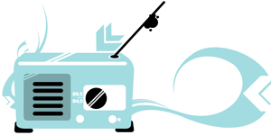
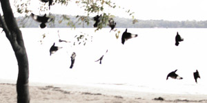
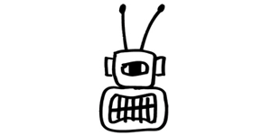
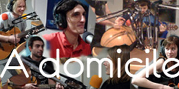
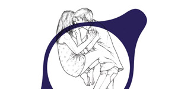

L'info
-
Radioscope
Zapping des radios européennes
-
A ma Une
La Une d'un quotidien européen
-
Radioscope
Zapping des radios européennes
-
A ma Une
La Une d'un quotidien européen
La musique
-
Album de la semaine
The Tallest Man On Earth | There’s No Living Now (Suède)
-
Label européen du mois
Because Music (France)
-
A domicile
Disco Anti Napoleon (France)
-
Music Every Week
Découverte européenne de la semaine : Concorde